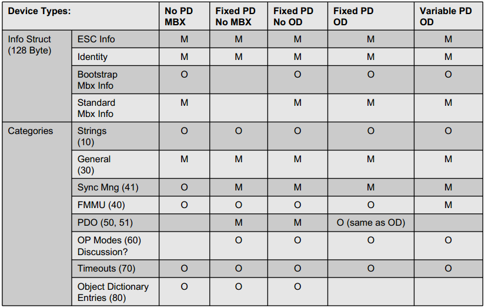

General
The SOES is a library that provides the Micro Controller user application with the means to access the EtherCAT fieldbus communication environment:
- EtherCAT State Machine
- Mailbox Interfaces
- Protocols
- CoE
- FoE + bootstrap template
Support for mailbox and protocols are typical examples when you need a slave stack to control the Application Layer of EtherCAT. The PDI used for such applications is either SPI or some Micro Controller Interface
The following sections show some basic examples on how to get the SOES up and running, as well as a lightweight example on howto design your slave. Since all code is local to the application or global variables, it is possible to tweak and optimize when possible.
Our target Application:
- Inputs 40bit
- One button 8bit
- One encoder value 32bit
- Outputs 8bit
- Parameters
- Slave commands
Now to translate and implement on top of SOES.
First look on the start up code. This example shows how to add a main function that will be called by startup code. In this example main's only purpose is to spawn two new tasks. One that executes SOES and one that control the ERROR LED. Some ESCs provided a pin for the RUN LED, some even for the ERROR LED, if it don't you can control them from the slave Micro Controller. We'll focus on the "soes" task.
int main (void)
{
rprintp ("SOES (Simple Open EtherCAT Slave)\nsoes test\n");
Configuration
The function soes is our EtherCAT slave device and can be split in 3 parts. Hardware Init, Software Init and Application loop. We will start with the Hardware Init.
- Hardware Init
- esc_reset, special function used for ESC reset if no Physical EEPROM used. This is local to the Application not part of the generic ESC handling.
- ESC_init, initialise SPI communication or similar
- Wait for ESC is started, waiting for SPI to be up and running, we'll query the ESC register DL status if EEPROM loaded OK and PDI operational, eg. SPI OK.
void soes (void *arg)
{
TXPDOsize = SM3_sml = sizeTXPDO ();
RXPDOsize = SM2_sml = sizeRXPDO ();
esc_reset ();
task_delay (tick_from_ms (200));
while ((
ESCvar.DLstatus & 0x0001) == 0)
{
}
...
}
_ESCvar ESCvar
Definition ecat_slv.c:23
void ESC_ALstatus(uint8_t status)
Definition esc.c:36
#define ESCREG_DLSTATUS
Definition esc.h:21
void ESC_read(uint16_t address, void *buf, uint16_t len)
void ESC_init(const esc_cfg_t *cfg)
#define ESCinit
Definition esc.h:72
- Software Init
- Reset the slave into Init state by writing AL Status register.
- Clear Errors by writing AL Status Code register.
- Stop the Application Layer, basically we disable the SyncManagers that implicitly block the data exchange.
void soes (void *arg)
{
...
while ((
ESCvar.DLstatus & 0x0001) == 0)
{
}
while (1)
...
}
void ESC_ALerror(uint16_t errornumber)
Definition esc.c:23
void ESC_stopinput(void)
Definition esc.c:881
void ESC_stopoutput(void)
Definition esc.c:924
void ESC_stopmbx(void)
Definition esc.c:402
#define ALERR_NONE
Definition esc.h:105
- Application loop
- ALevent handling, ALevent hold information on changes in ALControl or SyncManagers. ALControl for state changes and SyncManagers for changes written by EtherCAT in local memory mapped to active SyncManagers
- ESC_state for state handling, such as state step up or down with correct error and acknowledge response.
- Mailbox handler, generic support of mailboxes used by all Application Layer protocols.
- On mailbox actions we'll also check if we need to use a specific protocol handler to handle the incoming or outgoing Mailbox data.
Up until the now we're using the SOES protocol stack without any application specific calls. Next up we'll look at the application Code, here named DIG_process ().
void soes (void *arg)
{
...
while (1)
{
{
txpdomap = DEFAULTTXPDOMAP;
rxpdomap = DEFAULTRXPDOMAP;
txpdoitems = DEFAULTTXPDOITEMS;
rxpdoitems = DEFAULTTXPDOITEMS;
}
{
}
};
}
void DIG_process(uint8_t flags)
Definition ecat_slv.c:174
void ESC_state(void)
Definition esc.c:1093
void ESC_xoeprocess(void)
Definition esc.c:681
uint8_t ESC_mbxprocess(void)
Definition esc.c:561
#define ESCREG_LOCALTIME
Definition esc.h:51
void ESC_coeprocess(void)
Definition esc_coe.c:1435
void ESC_foeprocess(void)
Definition esc_foe.c:557
Application
The function DIG_process is the User part of the application and could be joined by more cyclic User functions for executing other parts of the application. The example code can be split in 2 parts
- Outputs
- Start by evaluating if we're in a state supporting update of outputs, eg. Operational state.
- If we're in OP we can read the current PDO data in the 3-buffer SyncManager mapped to the output SM, the default is SyncManager2, we read the ESC RAM address of SM2 and store it at the local address of the local variable Wb.LED. We'll read RXPDOsize bytes to trigger a complete SyncManager read.
- After local variables have been refreshed we basically write the local PDO variables to the User application, ex. a GPIO.
- Basically this is the API of the SOES toward the User Application.
- This function also include a watchdog mechanism, if triggered it will shutdown the outputs and trigger a state changes to safe operational. AlError is updated with cause of error to inform the Master.
{
}
{
{
{
reset_wd ();
gpio_set(GPIO_LED, Wb.LED & BIT(0));
}
if (!wd_cnt)
{
wd_trigger = 1;
}
}
else
{
reset_wd ();
}
...
}
void RXPDO_update(void)
Definition ecat_slv.c:150
#define APPSTATE_OUTPUT
Definition esc.h:297
#define ESCREG_ALEVENT_SM2
Definition esc.h:39
#define ESCsafeop
Definition esc.h:75
#define ESCerror
Definition esc.h:77
#define ALERR_WATCHDOG
Definition esc.h:118
#define SM2_sma
Definition options.h:103
- Inputs
- Is handled a bit simpler than outputs but in reverse order, the slave will continue update the inputs in state Safe Operational.
- Here we first read User application data from ex. GPIO and then write to local PDO variables.
- After the local variables have been refreshed we write those to the current PDO data 3-buffer SyncManager mapped to the input SM, the default is SyncManager3. This way we update the ESC RAM address with User Application data accessed by the EtherCAT master.
{
}
{
...
Rb.button = gpio_get(GPIO_WAKEUP);
Cb.reset_counter++;
Rb.encoder = Cb.reset_counter;
}
void TXPDO_update(void)
Definition ecat_slv.c:137
void ESC_write(uint16_t address, void *buf, uint16_t len)
#define SM3_sma
Definition options.h:115
ApplicationdataProcessdata
To run application data through EtherCAT processdata we need to describe for the fieldbus what data we have and will read/write. For this we have 3 objects, the ESI file, SII-EEPROM and CoE Object Dictionary. The first 2 are mandatory and the third is a very convenient way of describing complex slaves.
Our strategy is to keep the ESI file and the SII-EEPROM as thin as possible to avoid duplication of data that need to be maintained. Both will hold the bare minimum of mandatory + optional data to pass CTT. Optional data will be included to tell EtherCAT that detailed information can be retrieved via CoE from the OD stored in the slave it self.
SII-EEPROM
Snapshot from SII information matrix from EtherCAT communication slides.

Our target slave is Fixed PDO and OD
ESI-file
Snapshot from ESI tree from EtherCAT communication slides.
mandatory and optional ESI data
To briefly give a hint what are describe in the ESI and SII we're listing a set of included elements marked M for mandatory and O for optional.
- Vendor (M) , Describes the identity.
- Id (M), Hex, EtherCAT Vendor ID, OD 1018.01
- Name (M), NameType, Expedient vendor name
- Descriptions (M), Describes the EtherCAT device(s) using elements.
- Groups (M), Similar devices can be assigned to one group.
- Group (M), One group groups similar devices with slightly different features
- Type (M), A reference handle corresponding to the GroupType value in Description:Devices:Device:Group
- Name (M), Name for this group show by a configuration tool
- Devices (M), Element devices may describe one or several devices with their EtherCAT features such as SyncManagers, FMMUs and Dictionaries
- Device (O), Holds all information about the device like syncmanagers and FMMU, object dictionary, data types and the PDO mapping and assign description
- Device ATT: Physics (M),string, Physics at individual ports
- Type (M), Device identity
- Type ATT:ProductCode="#x98123467"
- Type ATT:RevisionNo="#x00000001"
- Name (M), Detailed name of device shown by a configuration tool (not used for identification)
- GroupType (M), Reference to a group (described in element Groups) to which this device should be assigned to. Name of the handle used in element Groups:Group:Type
- Fmmu (O), String to describe function, Outputs -> RxPDO, Inputs -> TxPDO , MBoxState -> FMMU is used to poll Input Mailbox
- Sm (O), Description of SyncManager including start address and direction.
- MBoxOut Mailbox Data Master -> Slave
- MBoxIn Mailbox Data Slave -> Master
- Outputs Process Data Master -> Slave
- Inputs Process Data Slave -> master
- Sm ATT:DefaultSize="128" , Size
- Sm ATT:StartAddress="#x1000" , Start address
- Sm ATT:ControlByte="#x26" , Settings , Bit [1][0] = 10, Operation mode Mailbox, 00 Buffered 3.
- Sm ATT:Enable="1", Enabled
- Mailbox (O), Description of available mailbox protocols
- Mailbox ATT: DataLinkLayer="true", Support of Mailbox Data Link Layer is mandatory.
- CoE (O), Device support CoE
- CoE (O) ATT: SdoInfo="true" , SDO Information Service
- CoE (O) ATT: CompleteAccess="false" , SDO complete access not supported
- CoE (O) ATT: PdoUpload="true", PDO description uploaded from the slave's object dictionary and SyncManager length calculated based on the same
- Dc (O), describes synchronization modes supported by the device.
- OpMode (O), Definition of supported operation modes
- Name (M), Internal Handle of operation mode
- Desc (O(M)), description of operation mode, recommended, Free Run (no sync), SM Synchronous, DC Synchronous
- AssignActive (M), Value of Latch and Sync Control registers
- Eeprom (O, use is mandatory)
- Data (M)
Or
- ByteSize (M), Byte Size of connected EEPROM device
- ConfigData (M), First 7 words of EEPROM, Configuration Areas
- BootStrap (O), Start address and length of mailboxes for BootStrap
So to describe the application we use CoE and Object Dictionary. The mapping between Object Dictionary and the User Application are done via local variables defined as user types. The Object Dictionary itself is stored in a matrix where all the indexes are listed. Every index then have a submatrix with its subindex.
ObjectDictionary
The Object Dictionary used as example follow the CANopen DS301 ranges.
- 0x0000 - 0x0FFF, Data Type Area
- 0x1000 - 0x1FFF, Communication Area
- 0x2000 - 0x5FFF, Manufacture specific area
- 0x6000 - 0x6FFF, Input area
- 0x7000 - 0x7FFF, Output area
- 0x8000 - 0x8FFF, Configuration area
- 0x9000 - 0x9FFF, Information area
- 0xA000 - 0xAFFF, Diagnosis Area
- 0xB000 - 0xBFFF, Service Transfer Area
- 0xC000 - 0xEFFF, Reserved Area
- 0xF000 - 0xFFFF, Device Area
RxPDO , 0x1600 - 0x17FF TxPDO , 0x1A00 - 0x1BFF
Example, on how the the OD index are linked. Top index, SyncManagers Communication Types. In index 0 the 0x04 indicates we have 4 SyncManagers defined. Every SyncManager is assigned a type, in index 1-4, we have standard settings SM0 = 1, SM1 = 2, SM2 = 3, SM3 = 4 from ETG 1000.6, 5.6.7.4.
- 0, Unused
- 1, MailBox Receive, master to slave
- 2, MailBox Send, slave to master
- 3, Processdata output, master to slave
- 4, Processdata input, slave to master
objectlist.h
...
{0x1C00,
OTYPE_ARRAY, 4, 0, &acName1C00[0], &SDO1C00[0]},
FLASHSTORE
_objd SDO1C00[] =
#define OTYPE_ARRAY
Definition esc_coe.h:54
const _objectlist SDOobjects[]
#define DTYPE_UNSIGNED8
Definition esc_coe.h:61
SyncManagers channels 0-31 are listed in SDO1C10-SDO1C2F. If we look at SyncManager channel 2, we see.
- Type 3, Processdata output, master to slave
It got one RxPDO index 0x1600 connected, and the submatrix for 0x1600 link one PDO object index 0x7000 subindex 1. The output object 0x70000108 give you the index 0x7000, subindex 1 and PDO object length 1(byte).
objectlist.h
FLASHSTORE
_objd SDO1C12[] =
};
FLASHSTORE
_objd SDO1600[] =
};
#define DTYPE_UNSIGNED16
Definition esc_coe.h:62
#define DTYPE_UNSIGNED32
Definition esc_coe.h:63
At PDO level we make the connection between the local application and the object dictionary. For all subindex in the PDO the last element is the address to the local variable.
objectlist.h
FLASHSTORE
_objd SDO7000[] =
};
utypes.h
typedef struct
{
uint8 LED;
} _Wbuffer;
#define ATYPE_RW
Definition esc_coe.h:104
Beside SyncManager to PDO mapping we also have mandatory data as
0x1000 Device Type 0x1018 Object Identity 0x10C0 SyncManager Communication Type, as we used as top index when figuring out our PDOs in the Object Dictionary.
For a complete description of the object dictionary you can get guidance by the ETG1000.6 EcatAlProtocols
A useful feature is the Asynchronous use of SDO parameters. In the example we have Parameter set holding an encoder scale value, just for show we also have a read only mirror value of the encoder scale. Parameters defined as a RW SDO parameter and can be written/read by SDO Download or Upload. In addition there is a ESC_objecthandler Hook on SDO Download where you can add additional logic, ex. we execute the mirror of the encoder scale value by assigning the encoder scale value to the mirror.
objectlist.h
FLASHSTORE
_objd SDO7100[] =
{0x02,
DTYPE_UNSIGNED32, 32, ATYPE_R, &acName7100_02[0], 0, &(encoder_scale_mirror)}
};
soes.c
void ESC_objecthandler (uint16 index, uint8 subindex)
{
switch (index)
{
...
case 0x7100:
{
switch (subindex)
{
case 0x01:
{
encoder_scale_mirror = encoder_scale;
break;
}
}
break;
}
...
}
This tutorial is just one way of doing it. Enjoy and happy coding!
Andreas Karlsson, rt-labs AB, www.rt-labs.com
 1.13.2
1.13.2